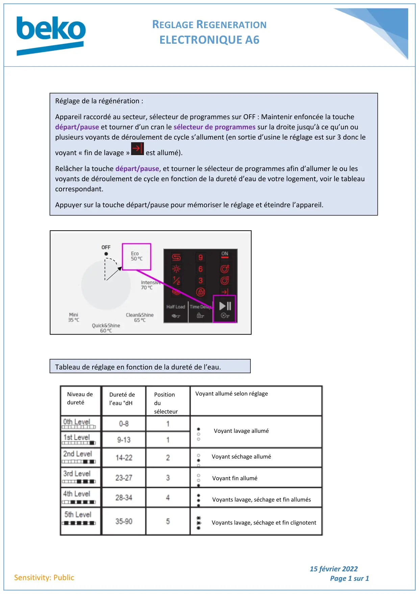

Réglage régénération lave vaisselle A6

REGLAGE REGENERATIONELECTRONIQUE A615 février 2022Page 1 sur 1Sensitivity: PublicRéglage de la régénération :Appareil raccordé au secteur, sélecteur de programmes sur OFF : Maintenir enfoncée la touchedépart/pause et tourner d’un cran le sélecteur de programmes sur la droite jusqu’à ce qu’un ouplusieurs voyants de déroulement de cycle s’allument (en sortie d’usine le réglage est sur 3 donc levoyant « fin de lavage »est allumé).Relâcher la touche départ/pause, et tourner le sélecteur de programmes afin d’allumer le ou lesvoyants de déroulement de cycle en fonction de la dureté d’eau de votre logement, voir le tableaucorrespondant.Appuyer sur la touche départ/pause pour mémoriser le réglage et éteindre l’appareil.Tableau de réglage en fonction de la dureté de l’eau.Niveau deduretéDureté del’eau °dHPositiondusélecteurVoyant allumé selon réglageVoyant lavage alluméVoyant séchage alluméVoyant fin alluméVoyants lavage, séchage et fin allumésVoyants lavage, séchage et fin clignotent
1 / 1